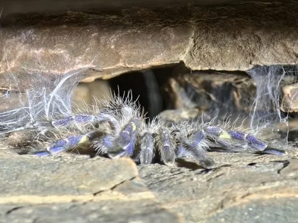

蛛形动物 · 动物界
金属蓝捕鸟蛛 Poecilotheria metallica

全身泛金属蓝光的树栖捕鸟蛛，仅见于印度一小片森林，行动迅捷、毒性较强，被列为极危物种。
- 分类
- 门节肢动物门纲蛛形纲目蜘蛛目科捕鸟蛛科属华丽捕鸟蛛属
- 栖息环境
- 印度东高止山脉的落叶林树洞与树皮缝隙
- 地理分布
- 印度安得拉邦一小片森林（东高止山脉）
- 保护级别
- 国际公约附录二，被评估为极危，栖息地极狭窄
物种志
金属蓝捕鸟蛛的足展约十五至十七厘米，全身覆盖金属蓝色的鳞毛，在光线下泛出钢蓝至紫蓝的光泽，腹部有黑色斑纹，足上还有黄色环带。它是树栖种类，足端爪垫发达，能在树皮和光滑表面快速攀爬，行动速度在捕鸟蛛中数一数二。雌蛛寿命可达十余年，雄蛛成熟后仅存活一两年。
它仅分布于印度安得拉邦的一小片落叶林，栖息在高大树木的树洞和树皮下，夜间在树干上伏击昆虫。雌蛛产卵囊后守护约两个月，幼蛛孵化后逐渐分散。它的毒性在捕鸟蛛中较强，咬伤会引起剧烈疼痛和肌肉痉挛，虽极少致命，但操作时必须使用长镊子，绝不可徒手。它被列入《濒危野生动植物种国际贸易公约》附录二，被评估为极危，栖息地砍伐与宠物贸易是主要威胁。
形态与习性
- 足展约十五至十七厘米
- 体色金属蓝，腹部黑斑，足有黄色环带
- 生活方式树栖，爪垫发达，攀爬迅速
- 毒性咬伤剧痛并可致肌肉痉挛
- 繁殖卵囊由雌蛛守护约两个月
- 保护附录二，极危，分布区极狭窄
趣味知识
- 它的蓝是结构色，光线一暗就变成深灰，像关掉了一盏灯。
- 它跑起来快得惊人，树栖种类的爆发力远超地栖捕鸟蛛。
- 整个物种只住在一小片印度森林里，一场砍伐就可能伤及全局。